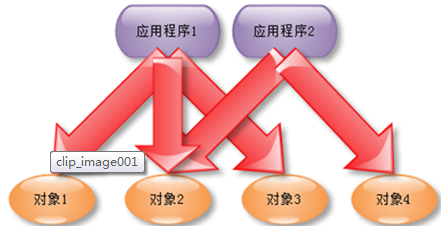
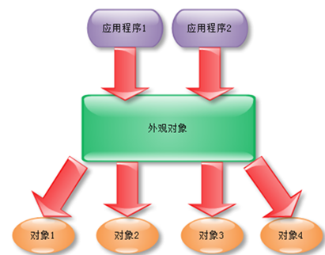

子类继承外观类的所有属性方法，客户端只需要跟外观类进行交流，实现了对所有子类的封装。
没有使用外观类
如图：

应用外观类
如图：

个人理解：
代理模式是将原类进行封装，客户端只需要与代理进行交流。代理就是原类的一个替身。简而言之就是用一个对象代表另外一个对象。强调的是个体。
使用中介者模式的场合
1.一组定义良好的对象，现在要进行复杂的通信。
2.定制一个分布在多个类中的行为，而又不想生成太多的子类。
可以看出，中介对象主要是用来封装行为的，行为的参与者就是那些对象，但是通过中介者，这些对象不用相互知道。
使用中介者模式的优点：
1.降低了系统对象之间的耦合性，使得对象易于独立的被复用。
2.提高系统的灵活性，使得系统易于扩展和维护。
使用中介者模式的缺点：
中介者模式的缺点是显而易见的，因为这个“中介“承担了较多的责任，所以一旦这个中介对象出现了问题，那么整个系统就会受到重大的影响。
三者的区别与联系
1，中介者模式：A，B之间的对话通过C来传达。A,B可以互相不认识（减少了A和B对象间的耦合）
2，代理模式：A要送B礼物，A,B互相不认识，那么A可以找C来帮它实现送礼物的愿望（封装了A对象）
3，外观模式：A和B都要实现送花，送巧克力的方法，那么我可以通过一个抽象类C实现送花送巧克力的方法（A和B都继承C）。（封装了A，B子类）
代理模式和外观者模式这两种模式主要不同就是代理模式针对的是单个对象，而外观模式针对的是所有子类。